Префектура Сига · Ёго · еда и ночлег
«Токуяма-дзуси»: фунадзуси, медвежий котёл и ночлег у озера Ёго
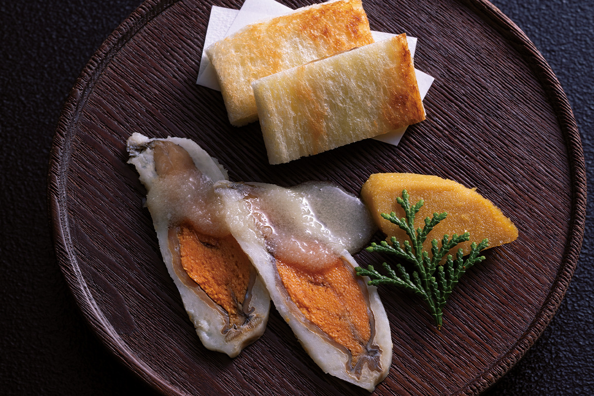
На берегу маленького озера Ёго, к северу от озера Бива, стоит японский дом, где ужинают и остаются ночевать ради одного блюда. Это фунадзуси, карась, который около года бродит в рисе.
Место
Дом у подножия Сидзугатакэ
Ёго это район на самом севере префектуры Сига, сегодня он входит в город Нагахама. Здесь, за северной оконечностью озера Бива, лежит небольшое озеро Ёго, а над ним поднимается гора Сидзугатакэ. Её знают по битве, в которой войска Хидэёси Тоётоми разбили армию Кацуиэ Сибаты. Хидэёси Тоётоми (1537–1598) объединил Японию в конце XVI века, а Кацуиэ Сибата (около 1522–1583) был одним из главных военачальников той эпохи и его соперником в борьбе за власть.
Вокруг горы и поля, вдоль берега тянутся рисовые чеки. «Токуяма-дзуси» стоит у самой воды. Его называют японской обержем: это ресторан, где можно и переночевать, а ужинают здесь ферментированными блюдами и тем, что дают окрестные горы и озеро.
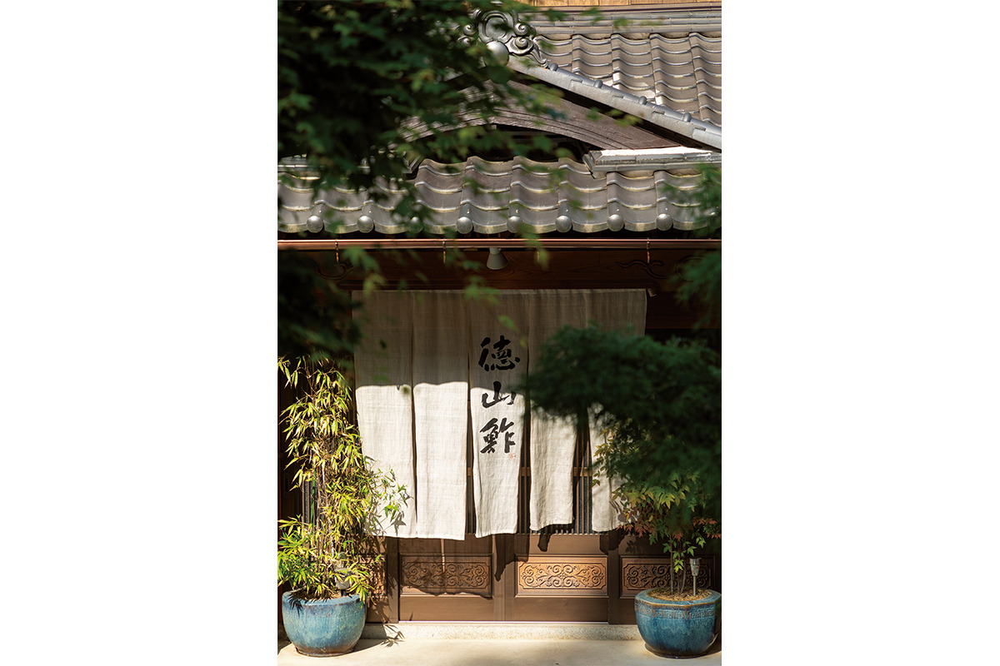
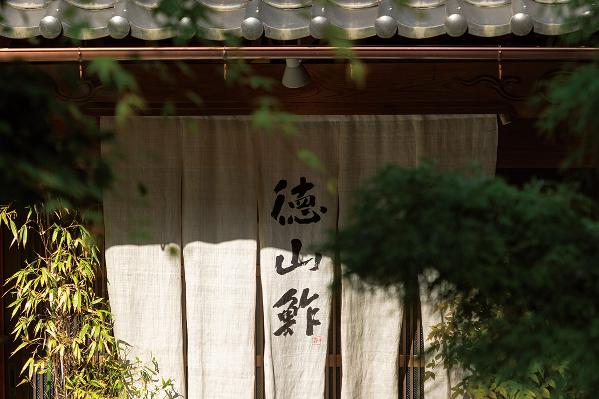
Хозяин
Как повар пришёл к ферментации
«Ферментация это лучший актёр второго плана во всей японской кухне», говорит хозяин Хироаки Токуяма. Он родился в Ёго в семье рыбака, учился готовить в Киото и в начале 2000-х годов работал поваром в одном из киотских рётэй, традиционных ресторанов высокой кухни. Тогда он и познакомился с Такэо Коидзуми, ведущим японским исследователем ферментации, который руководил исследовательским институтом в Ёго. «Время ферментации обязательно придёт», повторял учёный.
«Бульон даси, соевый соус, мисо: всё в японской кухне так или иначе связано с ферментацией. Я много учился, умел готовить и выбирать продукты, но о глубине ферментации не знал ничего»
хозяин «Токуяма-дзуси»
То, что институт Коидзуми оказался именно в Ёго, хозяин называет судьбой. В Сиге есть прекрасная ферментированная еда, нарэдзуси, но подавать её тогда было негде. В разговорах с учёным родилась идея открыть ресторан, где нарэдзуси будет главным блюдом. В 2004 году хозяин вместе с женой открыл в родных местах «Токуяма-дзуси».
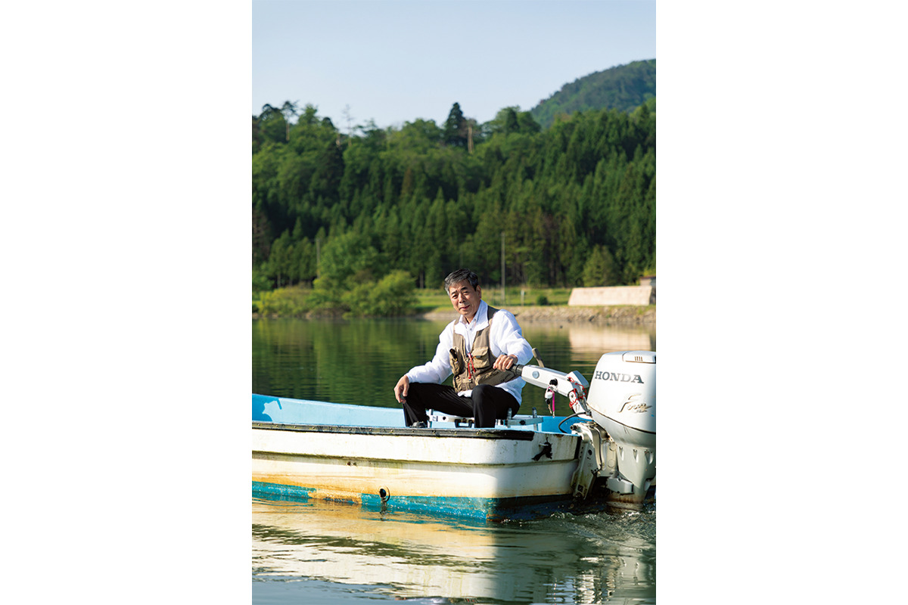
Фунадзуси
Карась, рис и год ожидания
Нарэдзуси это рыба, которую заквашивают с солью и варёным рисом: молочнокислое брожение превращает её в продукт долгого хранения. Самый известный пример это фунадзуси из карася. От улова до готового блюда проходит не меньше восьми месяцев, а в некоторых бочках рыба зреет больше года. Вокруг озера Бива фунадзуси ели с давних времён, и хозяин отточил рецепт, опираясь на знания о ферментации.
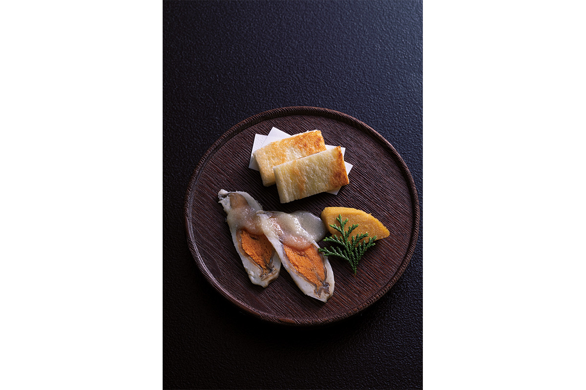
Открывая ресторан, хозяин поставил себе правило: придумывать меню только из того, что выросло в здешних водах и на здешней земле. Он ищет продукты в определённом радиусе от дома и строит ужин из того, что можно добыть в этот сезон. Если чего-то нет, это блюдо не подают и придумывают другое. «Готового шаблона нет. Это, можно сказать, кухня Токуямы», объясняет он.
Ужин
Десять блюд из озера и гор
Основа ужина это курс примерно из десяти блюд вокруг фунадзуси. Состав и число блюд меняются по сезону.
В нарэдзуси из скумбрии прячется сыр. К нему подают два соуса, из свежих томатов и из томатов с рисом, а по желанию можно добавить ягоды сансё. Кислое нарэдзуси становится неожиданно мягким. Первым блюдом, от которого сердце начинает биться чаще, бывает мягкопанцирная черепаха, запаренная с яйцом, под густым соусом с лёгким имбирным ароматом.
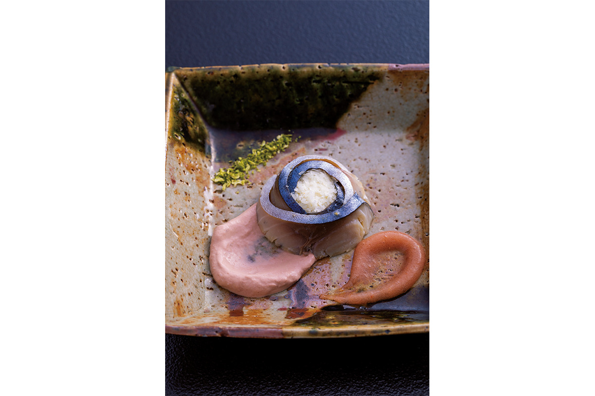
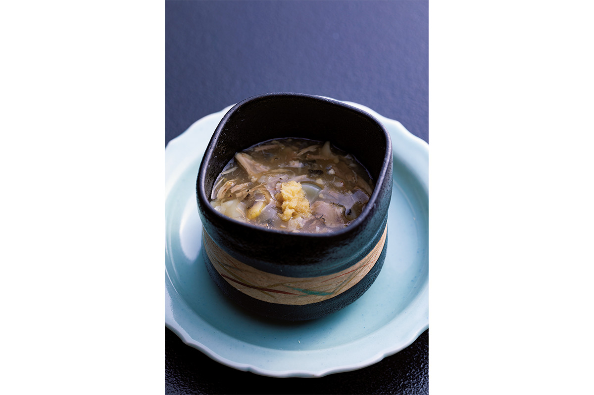
Сашими из карпа едят с соевым соусом с васаби и листьями сисо. Тины, которую часто ждут от карпа, здесь нет, а вкус мягкий и долгий. Иногда к сашими подают редкую карповую икру. Затем приносят тарелку с маринованной молодью аю в центре: вокруг выдержанный картофель, горные травы вроде японского горца, мелкая рыбка мороко из озера Бива и террин из медведя, кабана и оленя.
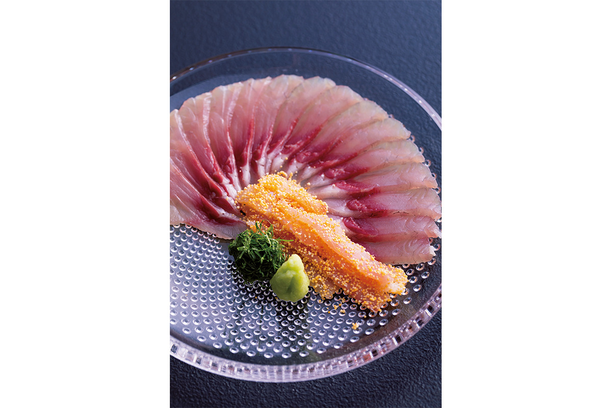
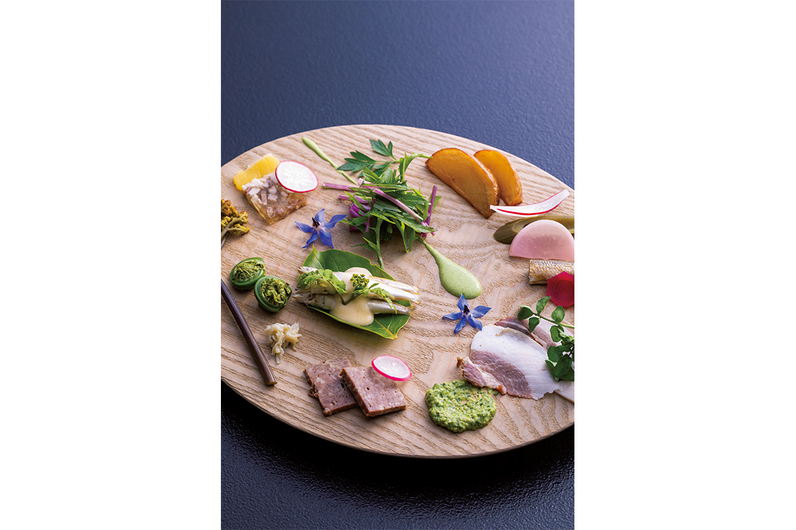
Горные травы, папоротник-страусник, иватабако, камнеломку и момидзигасу, жарят в темпуре и слегка солят: их едят прямо так, без соуса. Черепаху подают ещё раз, теперь жаренной на гриле на кости, с соусом из её печени. Мясо упругое, вкус насыщенный, и есть его лучше руками.
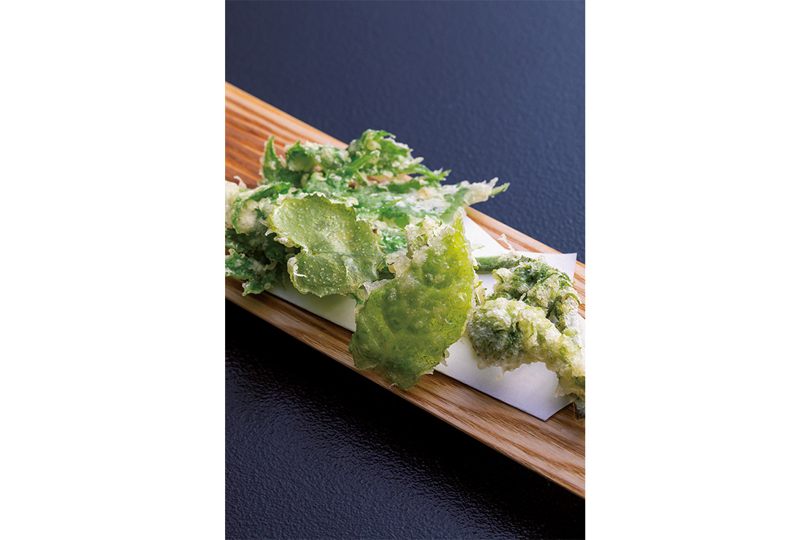
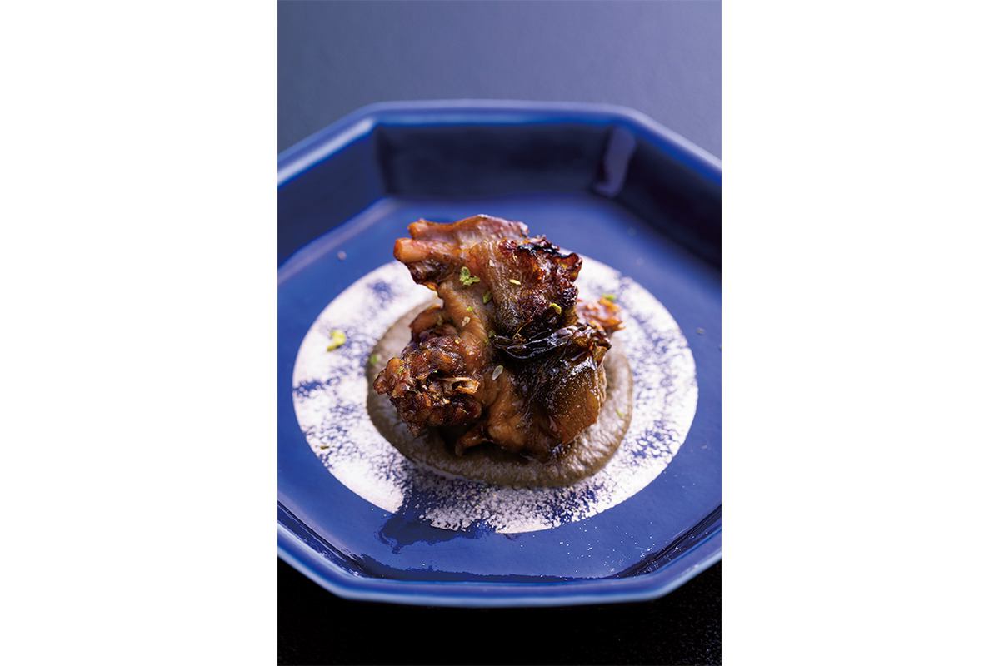
Дикого угря из озера Ёго хозяин ловит сам и жарит целиком, вместе с головой, с лёгким ароматом сансё. Потом наступает очередь медвежьего котла. В бульоне из комбу и соевого соуса плавают цветки сансё, а белоснежный медвежий жир тает при низкой температуре и даёт очень тонкий вкус.
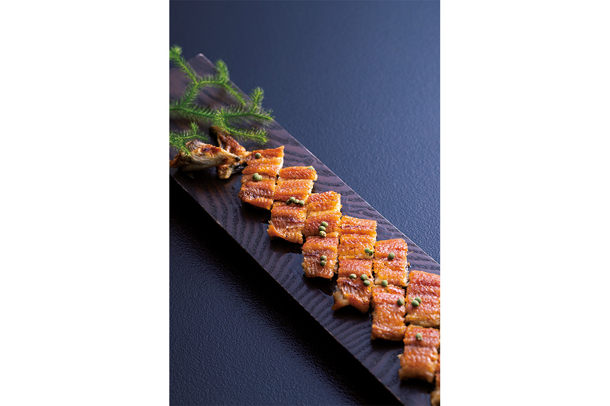
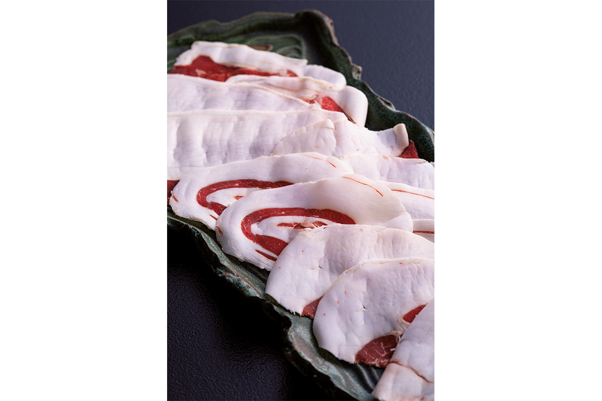
Ужин заканчивают тонкой лапшой удон: бульон от медвежьего котла смешивают с собственным ферментированным супом и снова добавляют цветки сансё. На десерт подают мороженое из риса, оставшегося после брожения, с клюквенным соусом. По насыщенности оно напоминает сливочный сыр, а на способ его приготовления в 2012 году ресторан получил патент.
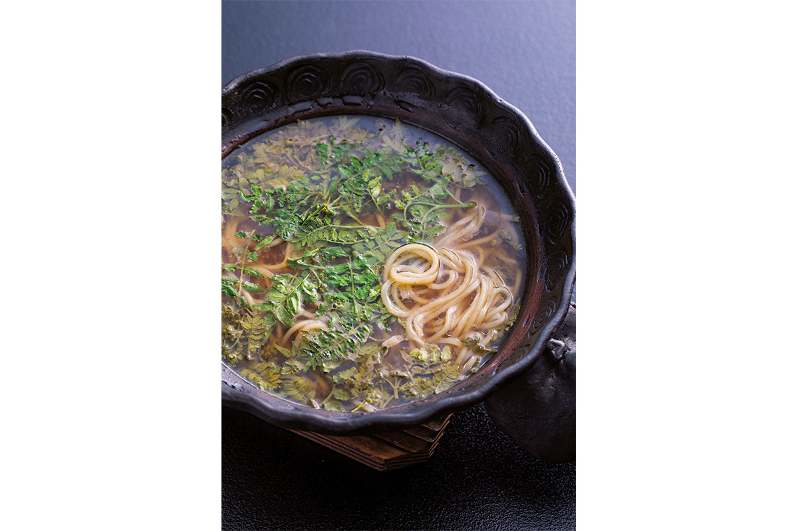
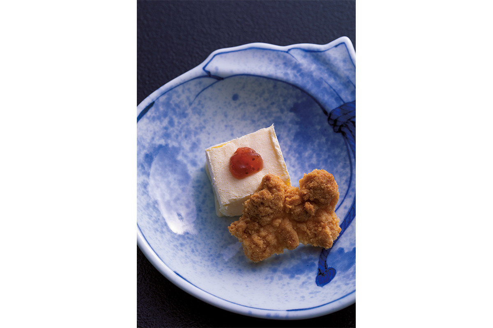
Секрет
Рис после брожения и местное сакэ
Нарэдзуси делают из рыбы, соли и варёного риса. Рис, который остаётся после брожения, здесь называют «ии» и добавляют во множество блюд: так ферментация работает почти на каждой тарелке.
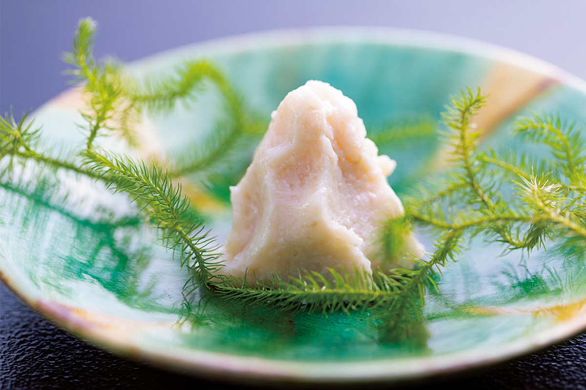
К ужину предлагают три сорта сакэ пивоварни «Ситихонъяри». Один из них, «Сига-но уми», сварен специально для ресторана на дрожжах, которые вывел Такэо Коидзуми.
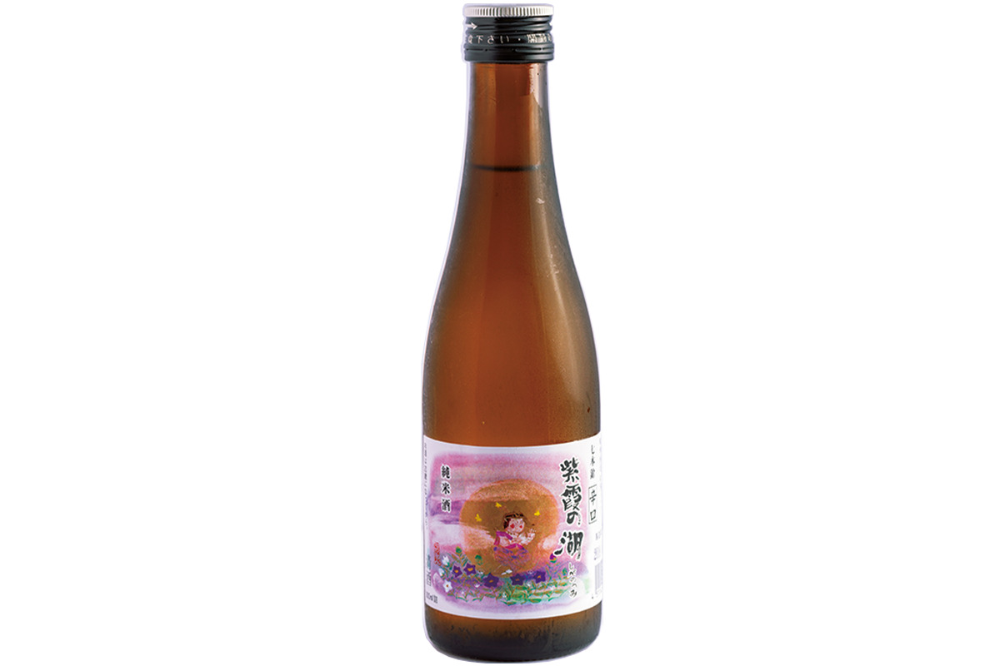
Ночлег
Три трапезы за одну ночь
Пообедать в «Токуяма-дзуси» можно и без ночлега, но заранее забронировав стол. И всё же остаться стоит по двум причинам. Первая это вечерний набор, который ждёт в номере после ужина. Во время нашего визита это были ветчина из оленины, копчёный сыр и одна мера «Сига-но уми». Можно продолжить вечер, а можно так и уснуть. С шести утра открыта купальня под открытым небом с видом на озеро Ёго, и вода на рассвете сияет.
Вторая причина это завтрак, который готовят только для гостей. Утром подают целый кайсэки, ряд небольших блюд из того, что дали горы и озеро. Так за одну ночь гость получает три трапезы: ужин, вечерний набор и завтрак.
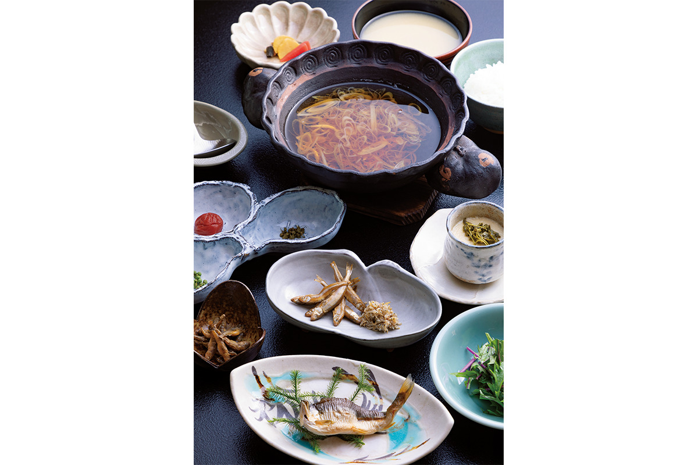
Летом гости приезжают за аю и угрём, а зимой здесь готовят блюда, которые потом подадут летом. Но всё зависит от природы. Хозяин говорит, что человек перед природой бессилен, и он хочет сохранить горы и озеро на десять, двадцать лет вперёд и дальше.
«Если выловить всё сразу, ничего не выиграешь. Брать надо столько, сколько используешь. Даже если кажется, что в горах всего много, а я вижу, что этому склону нужно ещё пять лет отдыха, я его не трогаю. Рецепт замены я придумываю заранее, пока продукт ещё есть, и откладываю. Важно продолжать»
хозяин «Токуяма-дзуси»
Сейчас, уходя в горы, он заодно собирает продукты для новогоднего угощения осэти: для многих это итог всего года, и ради тех, кто его ждёт, хозяин не идёт ни на какие уступки. В сборе продуктов и на кухне ему уже помогают дети.
«Что можно сделать сейчас и как быть в будущем? Хочу думать, думать и дальше честно работать с едой»
хозяин «Токуяма-дзуси»
Вид на озеро
Озеро Ёго видно почти из любой части дома. Купальня из керамики сигараки открыта для гостей с 6:00 до 23:00, и окунуться в неё можно и до ужина. С деревянной террасы ночью смотрят на звёзды, а в тихое утро озеро лежит гладким зеркалом.
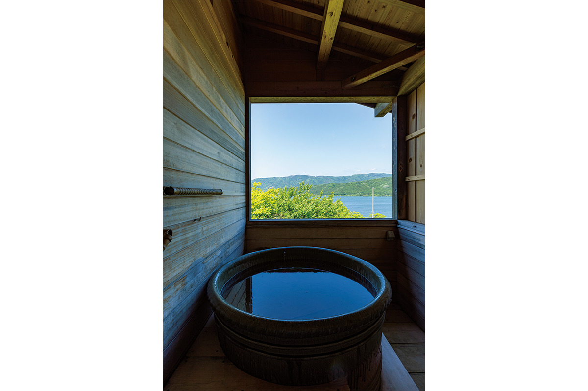
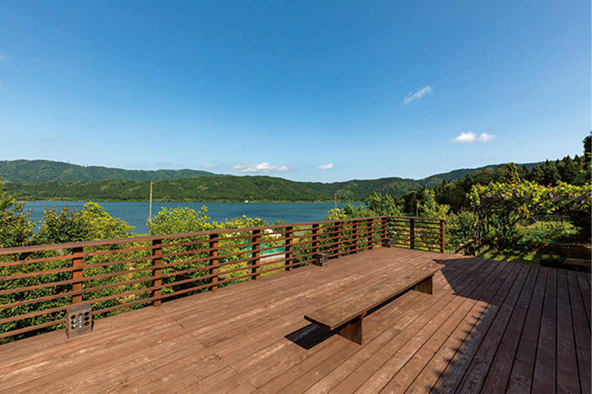
Обедают и ужинают в одном из трёх залов: два с обычными столами, на 2–5 и на 8–10 человек, и японская комната на 2–6 человек. В 2021 году обед стоил от 16 500 иен, ужин от 22 000 иен. Номеров всего шесть. Мы жили в «Комнате индиго»: в ней японские и западные детали, всё выдержано в тёмно-синих тонах, и атмосфера спокойная.
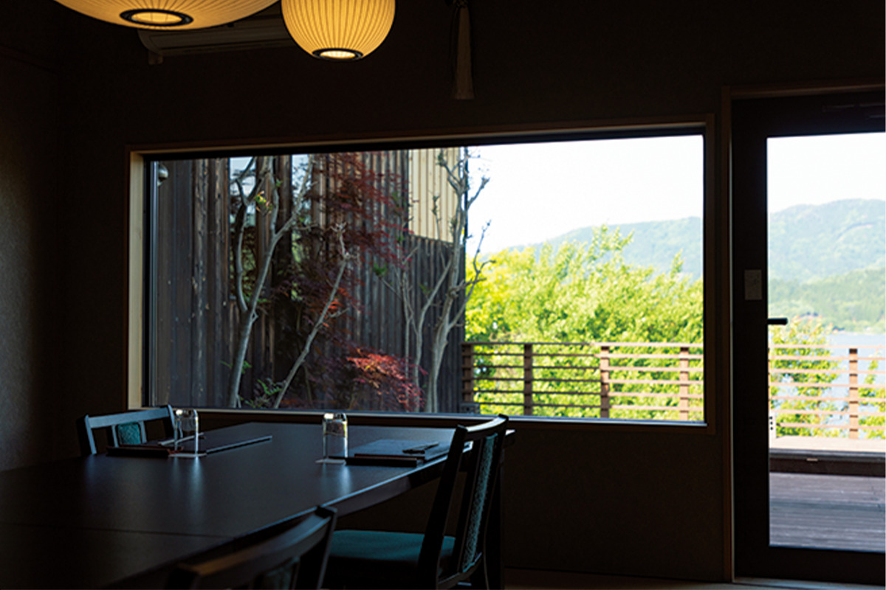
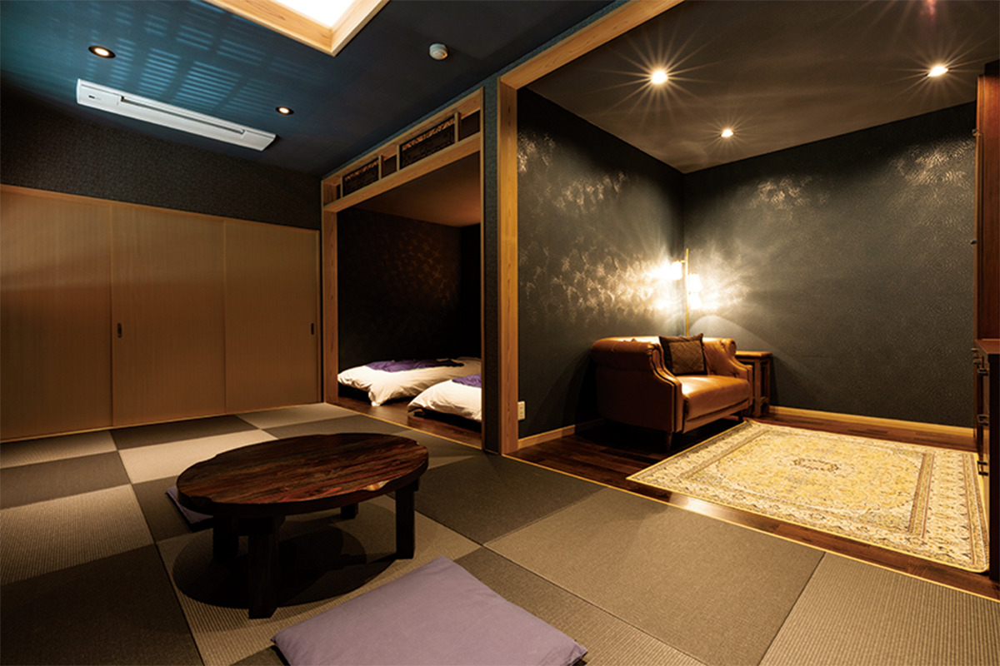
«Токуяма-дзуси»
- Адрес
- префектура Сига, Нагахама, Ёго, Каванами, 1408
- Телефон
- +81 749-86-4045
- Часы работы
- обед 12:00–14:30, ужин 18:00–21:00
- Цены / Вход
- обед от 16 500 иен, ужин от 22 000 иен, ночлег с ужином и завтраком от 38 500 иен; бронирование только по телефону, в том числе для обеда и ужина
- Номера
- 6, от 2 гостей (одному можно договориться), группа до 10 человек
- Заезд / выезд
- 16:00 / 10:00
- Как добраться
- от станции Ёго линии JR Хокурику около 5 минут на такси; на машине около 15 минут от съезда Киномото скоростной дороги Хокурику
Фото: Садахо Найто.